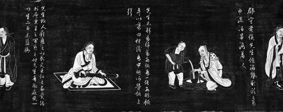
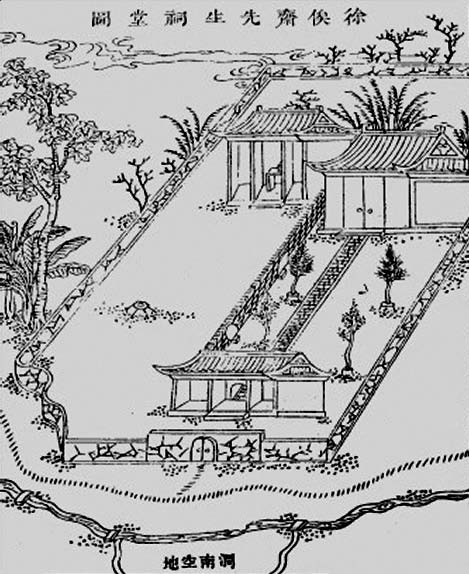

现在，我们能够撇开道德美化和浮夸，理性评估或理解徐枋的隐者生涯和半世纪苦行。在我看来这基于三点：第一，父亲遗命；第二，自我、性情和内心真实；第三，他对现实的美恶去从。我们已经谈论了其中两点，还剩下最后一个。简而言之，这个问题有关他对满清的态度。
他曾发过誓，或对自己立下严戒：
风波之世，斗诤之交，誓不欲以此身一涉其间。故今不特欲口绝讥评，亦并欲口无赞叹。
《诫子书》十禁令，有一条也是“毋言世事”，引“口铭曰‘祸从口出’，淮南子曰‘妄言则乱’，扬雄氏曰‘言轻则招忧’”等格言古训，亦以身教：“故我十三年来绝口不道世事，其有入吾室对吾饮者，论文艺，考古今，谈风月，则娓娓往复，或夜以继日，或坐以待旦而不倦也。若言及时事，我辄默不应，或再言之，则谢曰不知，如是者三，而其人之喙已塞矣。”[81]
显然，这是避祸、保身。小心翼翼，像个庸人。乙酉之后，东南一带慷慨悲歌之士随处可见，像他这般晦迹韬光、妥为自保，反差太大。其中一个已知原因，是必须践行父亲要他活下去的遗命。而更实际的原因，恰恰是他的肚子里面，有太强烈的危险情绪，装了一大堆恶毒的“腹诽”。既有“活下去”的使命，他就非自誓自儆不可，否则早就管不住嘴，引祸上身。实际上，即便“誓不欲”，他也经常犯戒。
一次，谈其老师郑士敬的精神影响，自称“不与时俯仰”[82]。当下之“时”谓何？明亡清兴。不与之“俯仰”，就是不与之俱进，就是抗拒。
批评扬雄：“夫子云学问文章，穷亘古今，独是汉祚甫移，而侈言符命，剧秦美新，为学者羞。”[83]王莽篡政，扬雄第一时间献上颂辞，徐枋为之害臊。但显然没人认为，他只是在谈汉朝，或批评扬雄。
古体诗《乙酉》，抒写1645年：“良时既不再，日月忽已沉。杳杳竟长夜，悠悠失路人。”[84]何为“良时”？“日月”是指什么（日、月合之即“明”）？当朝怎么成了“长夜”？你又“失”了何“路”？
不光诗文，丹青也难脱干系。徐枋爱画兰、芝，古以兰、芝为高格，说来普通，然而且看他画上题诗：“吾闻宋遗民，画兰不著土。况复芝无根，自然绝泥滓。”[85]由宋入元的遗民画家，笔下兰草，从不沾土；灵芝的可贵，也在于不依污泥浊土而活。是“自作解说”，是自况，也是不打自招。
如果以上还仅限于让人猜忌，下面两例，可谓无遮无拦。一为古体诗《故给谏陈公子龙》。乙酉之夏，陈氏在太湖起义，两年后失败被捕，趁隙自尽。以这样人物为题原已犯忌，而诗中居然讴之：“先臣毕志死，公心大复仇。泣血提一旅，迴天扫旄头。”[86]次则《郑业师云游诗序》，借老师郑士敬北游经历写道：“当其登金台，渡易水，顾瞻帝都，恍如隔世，城郭犹是，人民已非。”[87]北京还是北京，北京人却不是原来的北京人！可以说，分别破了“口无赞叹”、 “口绝讥评”之戒。两个誓言，他哪个也没守住。
所以，他的反清情绪实在是浓厚的，努力自制，犹且难禁。这于其“不入城市”、“杜门死守”，是最深刻注脚。设想一下，倘若这种情绪不过于激烈，他又有多大必要远离人群、自闭屋内？实际上，隐遁于他是一个特别现实的问题。他清楚自己实际管不住嘴，做不到将对满清的敌意化于无形。唯一办法，自放山林、切断外界联系，把自己关在土屋中。这就是为何别人以为他高风亮节，徐枋却断然否认，自称“本无气节之可语”[88]。他别无选择，非隐不可。他有一种别人所无的矛盾两难处境，既对满清抱刻骨仇恨，又要恪从父命坚持活下来；当是时也，惟隐与自闭可使二者相安。乙酉后，黄道周、陈子龙都曾招其参加反清，而悉予谢绝；对与父执杨廷枢往还，也抱躲避和极谨慎态度。陈子龙来信，是以徐汧英名相期待，徐枋却回答：“先公大节，与日月争光，亦何藉小子之区区，况今欲申大义于天下者，亦当弗待忠节之后为之区区也。”[89]不知内情者，对他如此冷漠拒绝参加反清斗争，必感齿冷。他默默吞咽的痛苦惟己自知，倘若不为恪守父命，他只怕早就揭竿而起，绝不落于人后的。
反清是明遗民群体的共同立场，而追溯徐枋的反清，情况还尤为复杂。首先，父亲因忠于明朝而死，他当然也要接过父亲衣钵。其次，满清不仅使他亡国丧父，还夺走许多他所尊敬、亲近的人，包括他的老师与父执。复次，他本人蒙受了奇耻大辱，强行薙发对他等同受戮。还有奏销令，逼得他连“庐墓”（结庐伴于父墓）亦不能得，流落天涯……
这些，对我们了解其反清情怀，已属充分。后来，又读到《鹧鸪赋》，从而得到更深入甚至我以为是最终的答案：
鹧鸪南方之鸟也，飞必南翔，集必南首，其鸣曰但南不北，故亦名怀南。余闻而悲之。[90]
整篇都围绕“南”字作文章，用了很多中国的古典与意象。“南为向明之位，北为宅幽之扃。”“维南为阳，维北为阴。”“司天有南正之官居，吹风有南吕之律。”“朱雀踞正南之位，大鹏奋图南之翼。”南为光明、开阔，北为阴暗、压抑。南是主，北是从。南气活跃向上，北气低沉晦死。南方神鸟所居，是飞翔、灵动、生气盎然之地，连北方的大鹏振翅，也是要投南方怀抱……总之，南是美善的象征，北乃劣下之所凝。
这里，“北”影射满清（北虏），一望可知。然而，“南”又指什么呢？假如从清灭明这一层，以为“南”之所指仅是明朝，我以为太窄。把历史略回顾一番，不难看出南、北的意蕴，一为华夏/蛮夷，一为文明/野蛮。晋代以来，中国历史冲突的重要主题，便是南北相攘。蛮族不断从北方发起冲击，将华夏文明向南压制。从而，南方慢慢成为正统华族及其先进发达文明的畛域、保留地，北地则华胡混成、习染胡风，文化纯正性渐失，而为诸蛮驰骋之地和较落后文明的空间。在这种对立和排拒中，从东晋五胡到宋代的金元再到明末的满清，绚丽优雅的南方，都一再为鄙陋粗野的北方所蹂躏毁圮。徐枋显然是在这意义上，以“怀南之鸟”为比兴，表达对美善文明的伤悲，故曰“望南天而碎心，溯南风而泣血”。
至是乃知，在徐枋那里，反清一事不是单纯的仇恨，也不仅出乎民族意识，而有历史的高度，核心问题是文明立场。这从他也屡次用“秦”来暗指满清，而获旁证。秦是中国王朝史内部的朝代，无关乎华夷冲突，不具民族对立意味，之所以是个负面象征，主要在于反文明特色。它为了自身权力稳固，燔毁了大量文化，禁绝民间言论、思想和著述，几致文明链条断裂（这种事，许多古代文明都实际发生了，如埃及、印度），所幸祚命短促，继起的汉代还来得及补救，经过两汉学者筚路蓝缕的辛劳，才使华夏文明回到复兴之路。秦代的教训，令人没齿难忘。所以，但凡提到反文明，历来知识者总以秦为喻。眼下，满清以陋瘠文明涂炭丰美文明，徐枋认为可谓嬴秦第二。《怀人诗九首》：“呜呼鲁仲连，屈强不帝秦。区区蹈东海，大义终能伸。胡然天帝醉，金苻被强嬴。”[91]这里的“秦”、“强嬴”，显然寓指满清。《题画松•之二》：“支离冰雪丹心在，偃蹇岩阿绿发茸。自是千年知汉腊，何曾一日受秦封。”[92]腊指礼仪，古时祭神称“蜡”、祭祖称“腊”。这里“汉腊”，意同“汉仪”。他以“汉腊”与“秦封”相对，表示文明的去从，他不可能接受和服从落后的文明。
对当时中国之变，黄宗羲曾以“天崩地解”来形容。无独有偶，徐枋笔下也出现“天崩地坼”[93]一词。这当然是巧合，却足证两人对于中国所遭现实，感受不谋而合，对中国未来，则抱同样的担忧。他们都是文明至上者；文明何去何从，是他们悲欣的主宰。因此，徐枋自比“怀南之鸟”，为文明的销铄放其悲音。

《陶渊明像传》（局部） 元•赵孟
沿着夷齐传统而来的隐者之流，以往在中国文化里是自主精神的体现。从最早的代表许由、夷齐，到孔子时代的接舆、长沮、桀溺，到陶渊明，再到徐枋⋯⋯这伟大传统，源远流长，只是到当代才渐为轻蔑的对象。

徐俟斋祠堂图
据罗振玉《年谱》，徐祠由门人潘耒（次耕）先生出资，于康熙三十九年建，址即徐枋旧居涧上草堂，以后又曾数次重修。